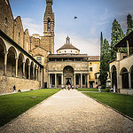

Khám phá nước Ý
Hành trình đưa chúng ta qua những mái vòm cổ kính ở Florence, các con phố bên kênh đào Venice và những quảng trường rộng mở tại Rome. Mỗi điểm dừng đều có một câu chuyện riêng về kiến trúc, nghệ thuật và nhịp sống của thành phố.